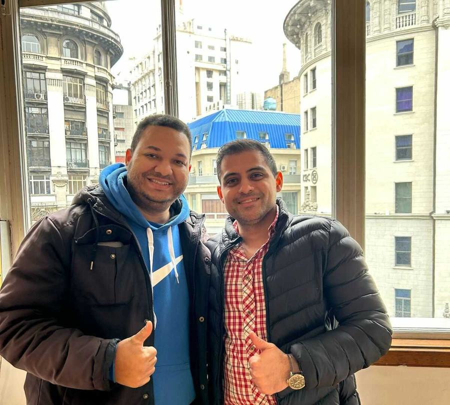
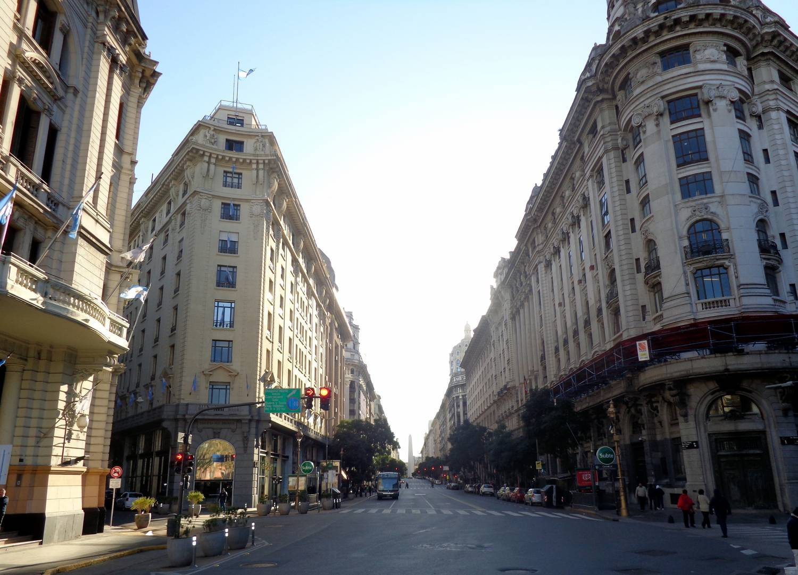
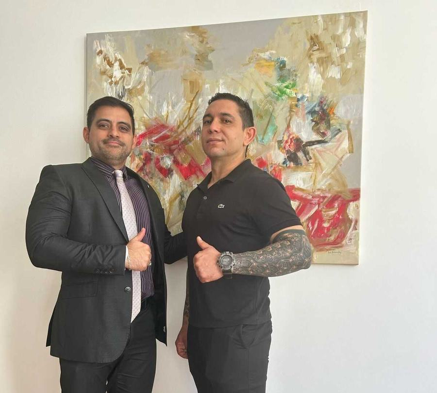
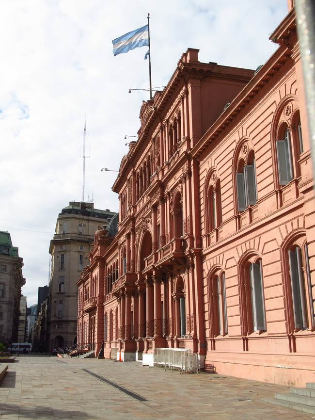
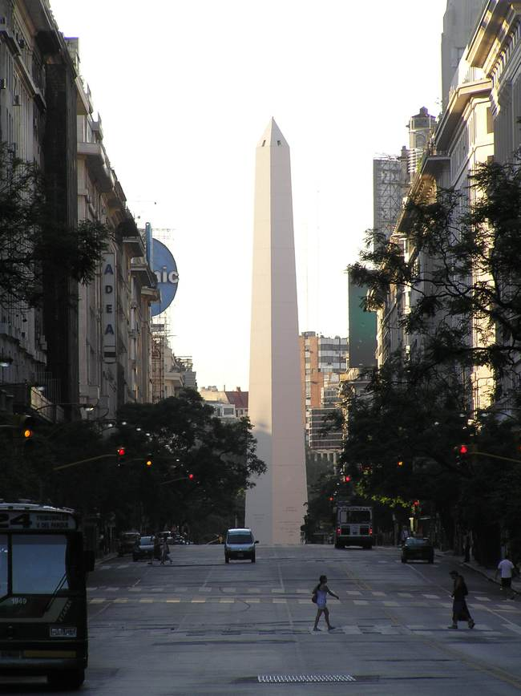
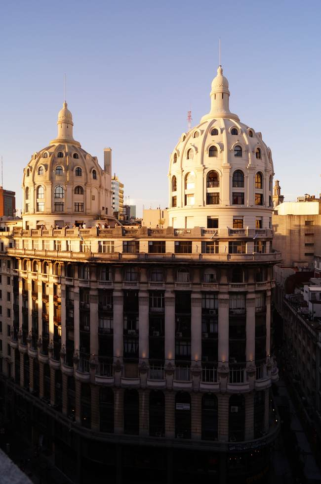
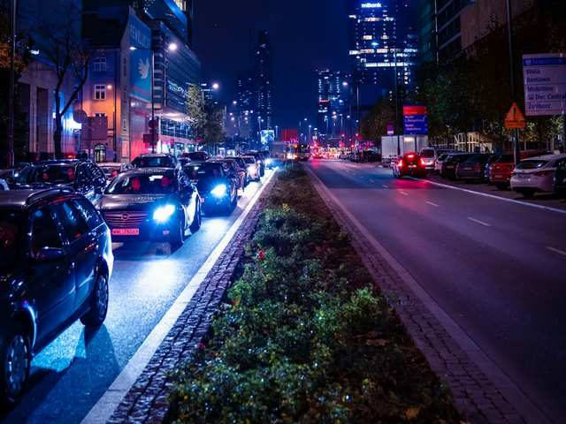
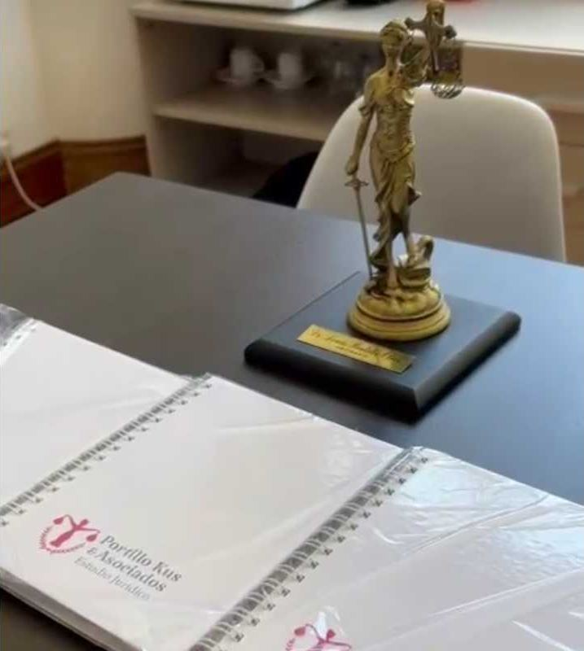

律师事务所 · 布宜诺斯艾利斯市中心
您的阿根廷国籍，交由最专业的团队办理
代理国籍、居留和签证申请。自 2020 年以来，已成功办结 1,200 多件国籍案件。
+1.200
2020 年以来成功办结的国籍案件
5,0★
Google 上 417 条评价
+12
法律业务领域
7
付款方式，支持境外付款
您需要什么帮助?
从这里开始

阿根廷国籍
全程为您保驾护航
我们全程代理您的入籍申请。自 2020 年以来，已成功办结 1,200 多件案件，同时也办理意大利和西班牙国籍。
- 1. 初次咨询，可通过 WhatsApp 或到事务所面谈。
- 2. 准备申请材料。
- 3. 递交申请并跟进案件进度。
- 4. 全程协助，直至宣誓入籍。
布宜诺斯艾利斯
坐落于城市核心
事务所位于布宜诺斯艾利斯市中心（Microcentro）的北斜街（Diagonal Norte），步行即可到达五月广场。



位置
北斜街上的 Miguel Bencich 大厦
布宜诺斯艾利斯市 Av. Pte. Roque Sáenz Peña 616 号，Edificio Miguel Bencich 大厦 4 楼 403 室（邮编 C1035）
- 步行即到五月广场和玫瑰宫
- 位于通往方尖碑的大道上
- 设有无障碍通道
业务领域
涵盖 12 个以上法律领域
国籍与移民是我们的专长。此外，我们也在以下领域为客户提供服务。


关于我们
综合性律师事务所，立足阿根廷，服务全球
我们是经验丰富的律师团队，专精多个法律领域。短短几年间，我们已成为阿根廷国籍与移民领域的标杆律所之一。
“选择我们，就是把您的权益交到最可靠的人手中。”
Denis Portillo 律师
执行总裁
执业证号待补充
合伙人及执业证号：待补充
客户评价
听听客户怎么说
★★★★★
"我在 Portillo 律师的帮助下开始办理入籍手续，从一开始他就让我完全信任……"
Yocselys B.
★★★★★
"非常专业。他陪伴我走完了取得阿根廷国籍的全过程……"
Yania M.
★★★★★
"强烈推荐 Portillo 律师处理移民事务……"
Jorge R.
★★★★★
"Dennis is the BEST! I thought my case was hopeless after visiting other attorneys…"
Adsterza
服务方式
服务与付款方式
服务
- 市中心事务所面谈
- WhatsApp 咨询
- 服务海外客户
- 设有无障碍通道
周一至周五 10:30–18:00
阿根廷境内付款
- 现金
- 银行转账
- Mercado Pago
境外付款
- PayPal
- Zelle
- Western Union
- Bank of America
身在海外？
您可以通过 WhatsApp 咨询，并在您所在的国家付款。